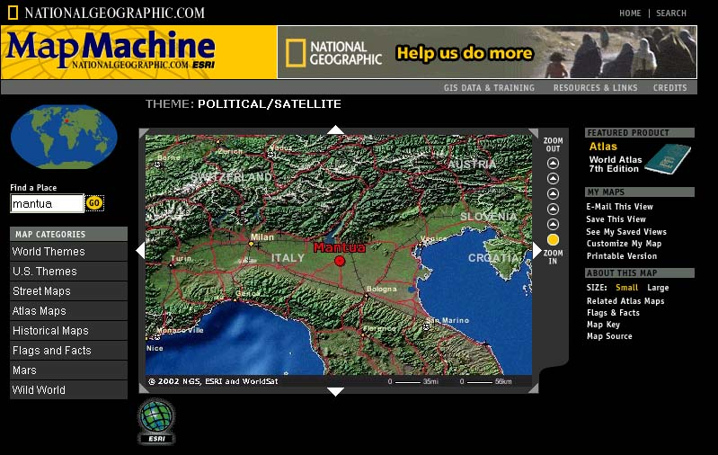
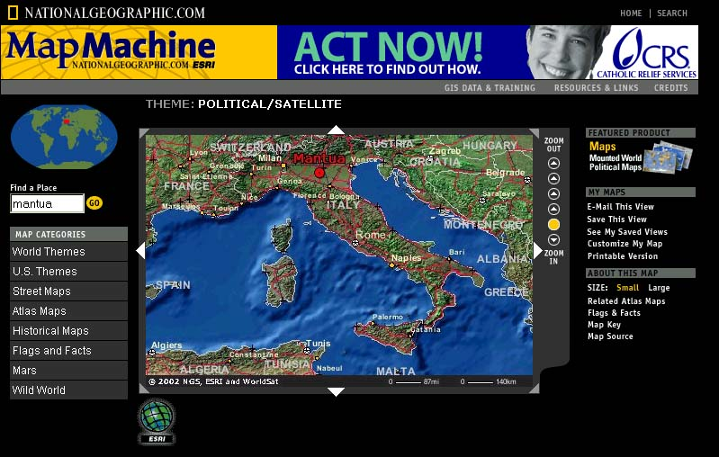
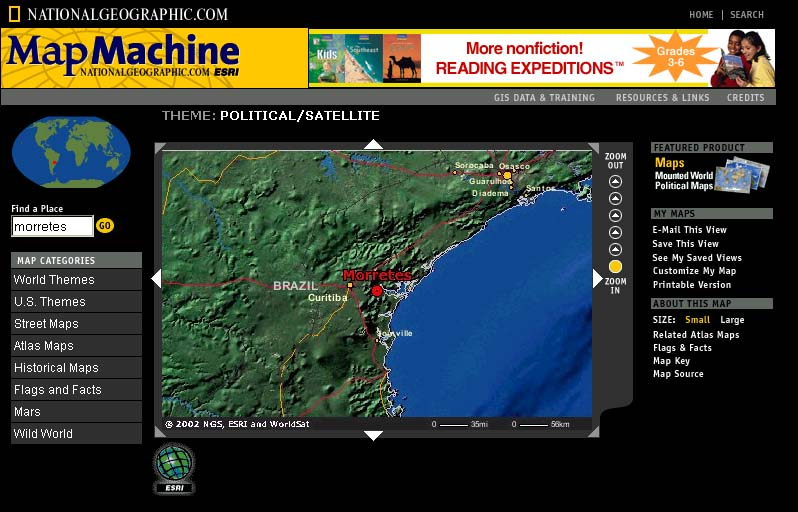
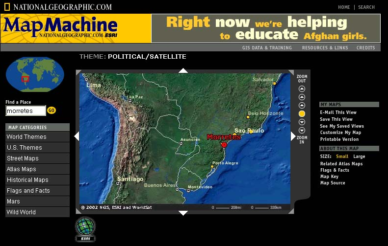

História
(Obs.: Esta é uma narrativa
livre elaborada pelo autor baseada nos dados que atualmente possuímos.
Contamos com a sua colaboração para que ela se torne a mais
fidedigna possível.
Contacte-nos através do e-mail: felipenicolau@felipenicolau.com.br
- Fevereiro de 2003.)
Corria o ano de 1.877, quando Giuseppe Giovanni Visini e Filomena Rosa Visini, resolveram mudar-se da sua cidade natal, Mantua - Itália, para o Brasil, provavelmente para prover à sua descendência uma vida melhor do que a que eles levavam.
Curiosamente a região litorânea que eles escolheram para viver é uma região que lembra o lugar onde eles moravam. Mais ou menos no meio de uma área plana cercada por montanhas, na Itália - os Pirineus, e no Brasil - a Serra do Mar, especificamente o Pico do Marumby - (Guarumby - Montanha Azul).
Ficou registrado nos livros a sua procedência e ano de chegada (Veja no final
da página um pouco da história de Morretes e os italianos):
http://celepar7.pr.gov.br/deap/imigrantes.asp
Junto com eles veio também o seu filho
Spírito Sabba Visini com 4 anos de idade.
Estabeleceram-se na região de Morretes,
na periferia da cidade, no lugar chamado Anhaia.
Aqui no Brasil, Spírito casou-se com Francelina Alves em 12 de Setembro
de 1895.
Faleceu em 11/07/1950, já se encontrava viúvo e deixou 02 filhos:
Espirito Vizine Filho (conhecido comoTio Espiritinho) e Leopoldo Visini.
Leopoldo Visini, que veio a casar-se
com Maria Joana Dall'Igna.
Este casal teve 9 filhas mulheres, todas batizadas com nomes que iniciam com
a letra "Z".
Zenaíta - Zeli - Zelinda - Zaltiva -
Zilvete - Zélia - Zeleide - Zonilda - Zuleica.
Giuseppe Visini e Rosa Visini
Spirito Visini e Francelina Alves - Espírito
Vizine Filho e ?
Leopoldo Vizine e Maria Joana Dall'Igna
Zenaíta - Zeli - Zelinda - Zaltiva - Zilvete - Zélia - Zeleide - Zonilda -
Zuleica.
Abaixo seguem algumas imagens da localização das cidades de Mantua Itália
e de Morretes - Brasil.
  
Mantua - Itália
Mantua - Itália
Morretes - PR - Brasil

Morretes - PR - Brasil
Imagens extraídas do site da National Geographic - www.nationalgeographic.com
=================================================
MARTINS, Romario. Historia do Paraná. Curitiba: Empresa Grafica Paranaense, 1937, p. 415-417.
(Obs.: A grafia, pontuação etc foi mantida de acordo com a referida
referência.)
"MUNICIPIO DE MORRETES: - Nova Italia, colonia iniciada com imigrantes
vênetas retirantes da colonia Alexandra, Paranaguá, e desenvolvida
com fortes correntes de italianos, declarada fundada a 22 de Abril de 1877,
com 12 nucleos num total de 610 lotes demarcados mas com poucas casas construidas.
Em Janeiro de 1878, época em que o govêrno da Provincia designou
o engenheiro André Braz Charéo Junior para assumir a direção
dessa Colonia, a situação dos imigrantes recem-chegados era
lastimavel. Em barracões e em casas alugadas, mais de 800 familias
aguardavam seu estabelecimento, completamente inativas, vivendo dos alimentos
que lhes fornecia o govêrno.Em Março de 1879 e por mais três
vezes depois, o Presidente da Provincia foi pessoalmente verificar a situação
dos colonos e estimular a formação de lotes e respectivas casas
que então eram apenas 150, restando assim, sem destino, cerca de 3.000
colonos, numero que posteriormente aumentou. Sendo grande parte dos imigrantes
natural de provincias do norte da Italia, extranharam o clima de Morretes,
sendo por isso transferidos para as colonias Alfredo Chaves, Antonio Rebouças,
Novo Tiról, Muricí e Inspetor Carvalho, no planalto de Curitiba.
Em Nova Italia foram localisadas 543 familias com 2.296 pessôas. Em
Fevereiro de 1881 (Relatorio do Presidente João José Pedrosa)
era o seguinte a situação dos seus diversos nucleos:
1 - Rio do Pinto, com 242 habitantes italianos e 14 nacionais;
2 - Sesmaria, com 620 habitantes;
3 - Sitio Grande e Carí, com 248 habitantes;
4 - America, reconstituida em 1877, sob a denominação de N.
S. do Porto, com 115 habitantes (36 suissos, 32 francêses, 23 alemães,
20 brasileiros e 4 italianos) instalados em casas provisórias situadas
em 66 lotes de 9 hectares cada um;
5 - Marques, com 245 habitantes, constituindo 59 familias italianas e 2 brasileiras;
6 - Entre Rios e Prainha, com 189 habitantes italianos;
7 - Cabrestante (não chegou a ser colonisada devido a serem suas terras
demasiadamente acidentadas);
8 - Rio Sagrado, com 180 habitantes;
9 - Ipiranga, com 145 habitantes;
10 - Graciósa, nucleo menos importante da colonia Nova Italia com apenas
9 familias ou 28 pessôas;
11 - Zulmira, com 33 lotes dos quais sómente 9 ocupados por igual numero
de familias ou 45 pessôas. Os demais lotes foram regeitados por serem
muito acidentados e pedregosos;
12 - Turvo, ultimo nucleo demarcado e colonisado em Nova Italia, ficava á
esquerda do rio Cachoeira, e, por conseguinte, no municipio de Antonina.
Centro deste vasto plano de colonisação de Morretes e Porto
de Cima, a colonia Nova Italia, foi fundada em terras doadas pela Municipalidade
pelo Coronel Antonio Ricardo dos Santos e possuia,em 1881, ano de sua maior
prosperidade, 72 lotes ocupados por outras tantas familias italianas compostas
de 318 pessôas."